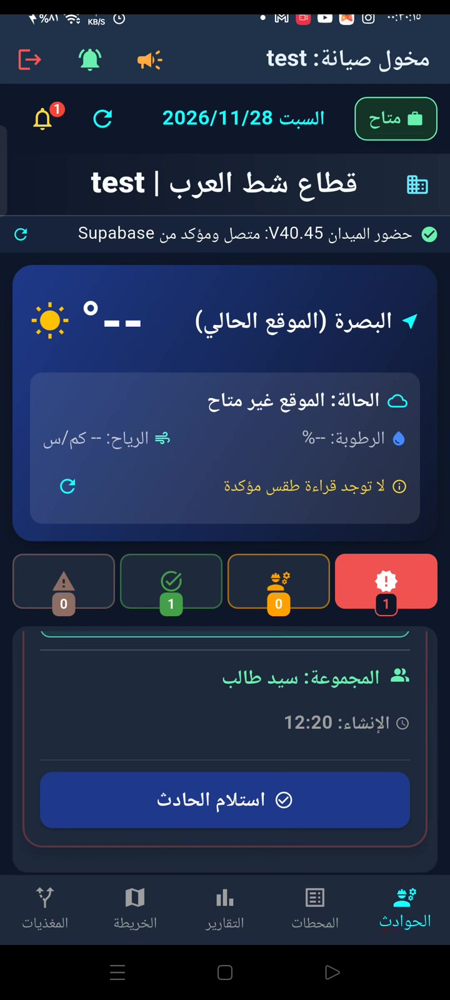
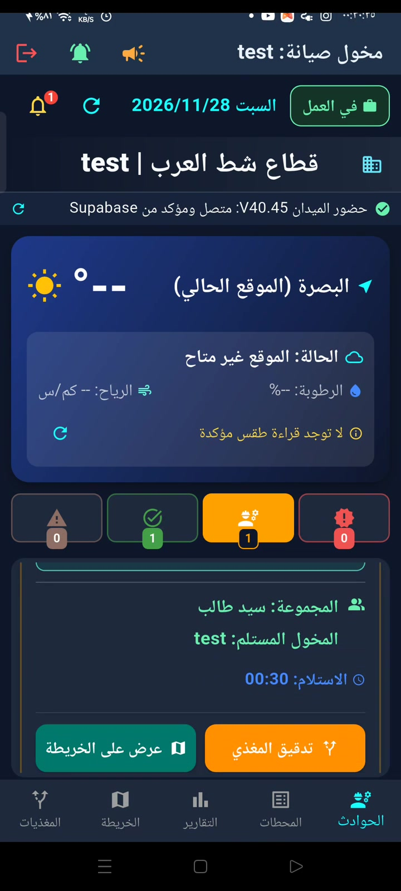
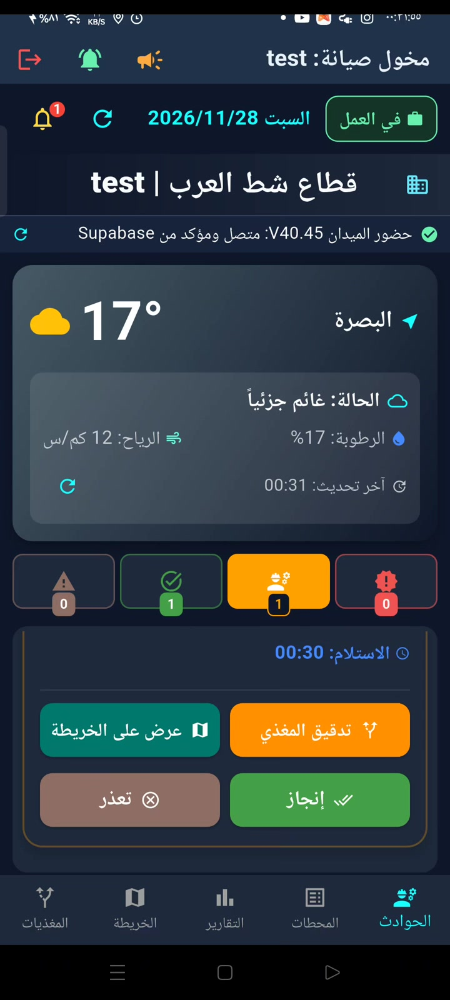
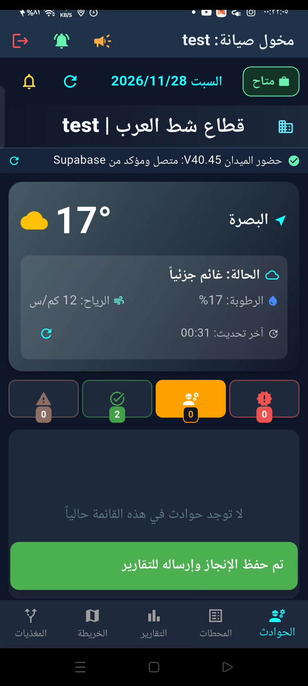

تطبيق الميدان: استلام الحادث وإنهاؤه
دليل المخول خطوة بخطوة على Android
للقسم الجديد: عرض المغذيات والرسم الميداني للمساح.
الشرح بالفيديو
تغيير حالة المخول واستلام حادث
خطوات الشرح المصاحبة للتسجيل
- 00:00 — راجع بطاقة الحادث وحالة المخول؛ يمكن تغيير حالة الدوام من أعلى الشاشة.
- 00:22 — تظهر بطاقة الحادث وزر استلام الحادث.
- 00:42 — بعد الاستلام تظهر خيارات عرض الموقع والإنجاز والتعذر.
تقرير إنجاز الحادث وإرساله
خطوات الشرح المصاحبة للتسجيل
- 00:00 — ارجع إلى واجهة الحوادث بعد العمل الميداني.
- 00:09 — يطلب التطبيق كتابة تفاصيل الإنجاز في التقرير الإجباري قبل التأكيد.
- 00:22 — تابع إشعار النتيجة والعودة إلى قائمة الحوادث.
التسجيل من النظام الفعلي المرسل من صاحب المشروع. الصوت محذوف؛ قد يختلف ترتيب الأزرار في الإصدارات الأحدث. الشرح المكتوب أدناه قد يشمل وظائف غير مصورة.
الدخول إلى تطبيق Android
يفتح المخول تطبيق Android ويدخل ببيانات الحساب المخصص له داخل مركز الصيانة. لا ينبغي مشاركة بيانات حساب مخول مع مخول آخر؛ لأن الحادث وتقرير العمل يتبعان لهوية المستخدم.
بعد الدخول تتضمن واجهة الميدان عادة تبويبات الحوادث، المحطات والتقارير، وأدوات للخريطة وإشعارات أو نداءات ميدانية بحسب وضع الحساب.
كيف أعرف أن حادثاً وصلني؟
- افتح تبويب «الحوادث».
- راجع قائمة الحوادث واسم المحطة والمغذي ورقم المحولة ونوع العطل.
- افتح بطاقة الحادث للاطلاع على التفاصيل والأزرار المتاحة.
- إذا لم يظهر الحادث، راجع اتصال الإنترنت والمجموعة المرتبطة بحسابك، ثم حدّث القائمة.
- تأكد ألا تكون قد دخلت في وضع المشاهد أو المساح الذي لا يملك استلام الحوادث.
استلام الحادث من الهاتف
- من بطاقة الحادث الجديد اضغط استلام الحادث.
- اقرأ نافذة التأكيد، ثم اضغط «تأكيد الاستلام» إذا كنت المعني بالمهمة.
- يتحقق التطبيق من أن الحادث لم يُستلم مسبقاً ولم تتغير حالته.
- عند النجاح تصبح حالة الحادث «قيد المعالجة»، ويُسجل وقت الاستلام واسم المستلم.
- راجع موقع المحولة؛ إذا لم يكن GPS معتمداً، استخدم النقطة الدالة والتواصل الرسمي ولا تذهب إلى علامة افتراضية.
فتح الموقع والملاحة
يستطيع المخول فتح تفاصيل المحطة والمغذي والمحولة والنقطة الدالة، وتحديد نقطة الوصول وفتح تطبيق خرائط متوافق عند توفر إحداثيات فعلية.
التطبيق يتضمن أدوات لمشاركة بيانات الموقع ونسخها، مع دعم مسارات مثل MAPS.ME وتطبيقات خرائط أخرى بحسب الجهاز. لا تفترض أن الإحداثيات المفقودة يمكن تعويضها بموقع المحطة نفسها.
إتمام الحادث بنجاح
- بعد تنفيذ المهمة وفق إجراءات السلامة المعتمدة افتح بطاقة الحادث الجاري.
- اضغط زر إنجاز.
- اكتب تقرير الإنجاز الإجباري: ماذا وُجد، ماذا أُنجز، وما النتيجة.
- اضغط إرسال؛ ثم تحقق من تأكيد الحفظ والمزامنة.
- ارجع إلى «التقارير» أو «الحوادث المنتهية» لتتأكد من تسجيل النتيجة.
تعذر الإنجاز
- اضغط تعذر عندما لا يمكن إكمال المهمة.
- اكتب سبباً محدداً، مثل الحاجة إلى معدات أو تعذر الوصول أو سبب فني معلوم.
- أكد الإرسال وتحقق من ظهور النتيجة.
- لا تستخدم «تعذر» لمعالجة مشكلة اتصال إنترنت فقط؛ انتظر تأكيد المزامنة أو تواصل مع المركز.
النداءات والطوارئ
توجد نافذة لإرسال طلبات مساعدة أو مواد أو نداءات للمركز. اكتب نصاً واضحاً يذكر الموقع والحاجة التشغيلية، ثم استخدم زر الإرسال عندما تتوفر الصلاحية.
هذه الوسيلة للمراسلة والمتابعة ولا تغني عن اتصال الطوارئ الميداني الرسمي عندما تكون سلامة الأشخاص معرضة للخطر.
وضع المساح والمشاهد
المساح يُستخدم لمراجعة المحطات والمواقع والإحداثيات الميدانية ضمن الصلاحيات، بينما المشاهد يطّلع على المعلومات المتاحة له دون صلاحية استلام الحوادث أو تغيير حالتها.
لا تحاول تجاوز الدور من خلال هاتف آخر؛ التحقق الحقيقي يجب أن يتم في الخادم.
صور من داخل النظام والتطبيق
مستخرجة مباشرة من التسجيلات المرسلة وليست واجهات مرسومة.





تقدر ترجع للفهرس أو تنتقل إلى الفصل التالي. إذا كان المطلوب يخص جهازك الفعلي، راجع صلاحية الحساب والإصدار المثبّت قبل تنفيذ أي خطوة.